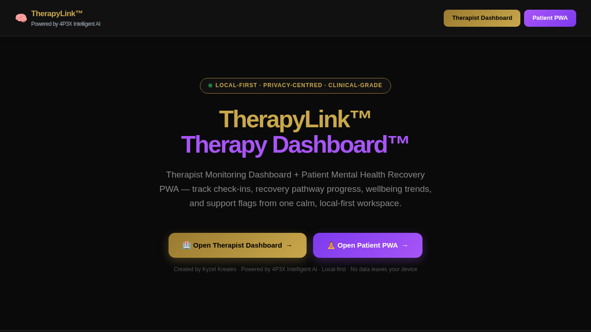

Demo Mode shows the product. Live Mode runs the product — once connected to a real backend, authentication, persistent records, and real-time sync.
What it is
TherapyLink™ is a working demonstration of how the 4P3X base architecture can support therapy coordination, patient pathway management, wellbeing tracking, and AI-assisted clinical support workflows. It features a therapist dashboard and a patient-facing PWA.
Where it can be used
Private therapy practices, wellbeing teams, mental health organisations, outpatient services, digital health platforms, and care pathway coordinators.
Why it was built
Built to demonstrate that the same modular base can support sensitive, structured, user-centred experiences — not just task management or training. Care pathways, check-ins, and progress visibility are all expressible through the same architecture.
When it is useful
When a care organisation needs to manage multiple clients, track pathway progress, monitor risk flags, and deliver guided content at scale — without the cost of a full custom clinical system.
Who it helps
Therapists, private practitioners, wellbeing coaches, NHS-adjacent support teams, care pathway coordinators, and digital health product teams.
How it works
The product features a therapist monitoring dashboard for managing client progress, session notes, flag management, and content delivery — plus a patient PWA for guided recovery, check-ins, and secure communication.
Key features
Architecture behind it
Built from the 4P3X base using the same dashboard/PWA split, configurable data model, and AI guidance zones — refactored with care-sector identity, privacy-first logic, and patient-facing UX.
Demo Mode to Live Mode pathway
Demo Mode shows all features with anonymised demonstration data. Live Mode connects real patient records, authentication, clinical data handling, and secure backend storage. Does not replace clinical judgement or emergency services.
What it can become next
Could become a full clinical coordination platform with EHR integration, video session support, referral pathways, outcome reporting, and NHS-adjacent compliance.
Investor and employer relevance
Demonstrates the creator's ability to adapt the base architecture into sensitive, regulated sectors while maintaining safety-aware design and clinical boundary awareness.
⚠ Important disclaimer
TherapyLink™ is a working product demonstration only. It does not replace clinical judgement, professional therapy services, or emergency mental health services. All clinical decisions remain the responsibility of qualified practitioners.